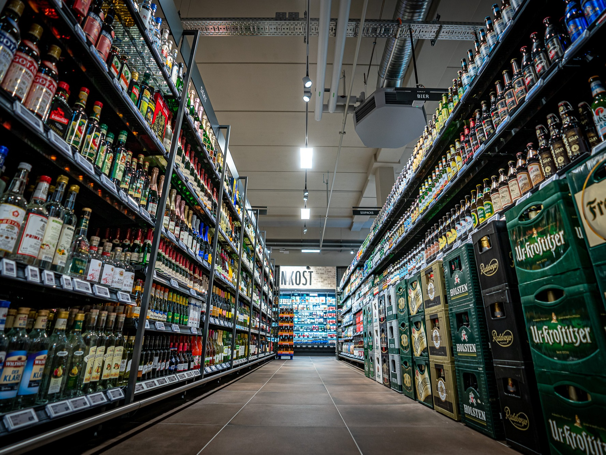

At our REWE store, we are a team of around thirty colleagues working together across different roles and schedules. About 30% of us are young employees between 18 and 25, while the rest are mostly between 25 and 40. I am currently the only trainee in retail sales, alongside two young women completing their apprenticeships in floristry. Our team includes mini jobbers, students, part time workers, and full time staff. We come from a variety of cultural backgrounds — Burkina Faso, Uganda, Iran, Russia, Ukraine, Moldova, Morocco, and more — making our workplace diverse and welcoming.


The dairy department offers a wide range of fresh refrigerated products.

Long lasting pantry staples for everyday use.
Convenient products with long shelf life.

Freshly baked goods that create a warm atmosphere.

A complete assortment for all occasions.

Personalized service with freshly prepared products.

This department focuses on products prepared directly in the store, offering freshness and high quality with a personal touch.